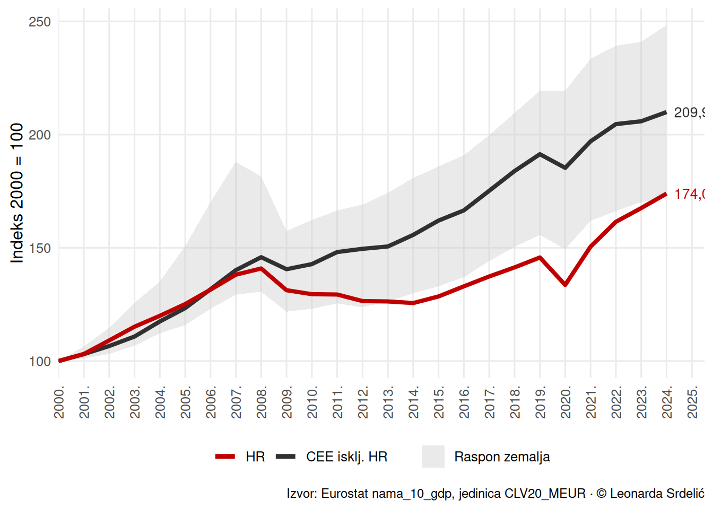
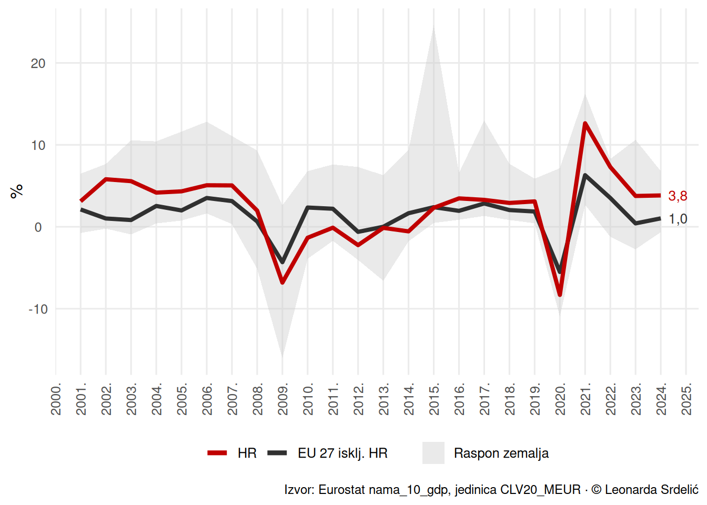

Gospodarski rast
1 Posljednje ažuriranje
Stranica se automatski renderira ponedjeljkom u 06:00 (CET). Posljednji render: 15.11.2025. u 18:41.
2 Najnovija kretanja BDP-a u EU 27
2.1 Nominalni BDP yoy
2.2 Realni BDP yoy
2.3 Realni BDP yoy (posljednji kvartal)
2.4 Realni BDP qoq (posljednji kvartal)
2.5 Realni BDP qoq (zadnji kompletni kvartal)
2.6 Nominalni BDP
2.7 Realni BDP
2.8 BDP po stanovniku u PPS (CEE, EU 27 = 100)
3 Dugoročni trendovi trend realnog BDP-a
3.1 Kretanje realnog BDP-a: Hrvatska i referentne europske skupine
4 Dinamika rasta realnog BDP-a
4.1 Godišnje stope rasta realnog BDP-a
4.2 Tromjesečne stope rasta realnog BDP-a
5 Distribucija realnog BDP-a unutar skupina
5.1 CEE bez Hrvatske


5.2 EU 27 bez Hrvatske


5.3 Područje eura bez Hrvatske
6 Napomene
- Izvori podataka: Eurostat, AMECO, Copernicus, DZS
- Metodološke napomene: svi grafovi izrađeni su na temelju javno dostupnih serija
- Ažuriranje: podaci se automatski osvježavaju prilikom ponovnog renderiranja Quarto dokumenta
© Leonarda Srdelić, 2025